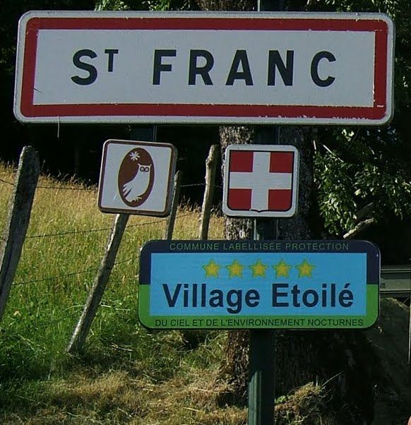
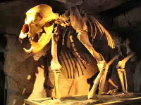

Saint Franc : Village étoilé
En 2010, Saint Franc a été la première commune de Savoie à être labellisée "village étoilé" par l'ANPCEN (Association Nationale pour la protection du Ciel et de l'Environnement).
Ce label récompence les efforts mis en oeuvre par les communes contre la pollution lumineuse. Saint Franc a reçu la note maximale avec 5 étoiles (seules 6 communes en France en bénéficient),
témoignant d'un ciel nocturne préservé. Car cela peut paraître étonnant, mais à Saint Franc la nuit... il fait noir !
|

|
Festival des nuits d'été : Festival de musiques & d'arts vivants
Le festival "Les Nuits d'Eté" s'adresse à un public local de résidents et d'estivants, un programme de haut niveau, sans a priori, de la façon la plus simple et la plus conviviale possible à des tarifs abordables. Talent, simplicité, contact direct et chaleureux, chacun y trouve son bonheur. Beaucoup de personnes qui étaient juste venues "pour voir" furent surprises de se voir offrir dans des lieux parfois isolés dans l'Avant Pays Savoyard, si simplement et si directement, le meilleur avec passion. Ce festvial itinérant de commune en commune, se déploie, cette année, du 2 au 10 août 2019. Le 7 août à 17h, la ferme de la Berthe à St Franc sera le lieu d'une pièce de théâtre "Yvonne, Princesse de Bourgogne".
|
|
Caves de Chartreuse :
Les caves de Chartreuse sont les plus grandes caves à liqueur du monde.
Elles se trouvent à VOIRON, à 30 km du camping. La visite est gratuite
et une dégustation est offerte à la fin de celle-ci.
Durant la visite, vous seront projectés plusieurs films dont un en 3D.
|
|
La Correrie, Musée de la Grande Chartreuse :
Au coeur de la Chartreuse, à seulement 2 km du célèbre
monastère fondé par St Bruno en 1084, ce site unique voulu par les moines,
vous permettra de mieux comprendre le mystère de l'Ordre des Chartreux,
leur 900 ans d'histoire, leur mode de vie...
La visite du musée dans l'ancienne dépendance des moines Chartreux, est
très intéressante.
La Correrie est à SAINT PIERRE DE CHARTREUSE à 30 min du camping.
|
|
Musée de l'Ours :
Pistez l'ours des cavernes et revivez une aventure scientifique et humaine
exceptionnelle. C'est une visite individuelle durant 1 heure au cours
de laquelle a lieu la projection d'un film 3D.
Le musée se trouve à ENTREMONT-LE-VIEUX.
|

|
Musée de la machine à Bois de l'outillage
à main :
Unique en France, ce musée restitue l'ambiance d'un atelier
de la première moitié du XXème siècle. Il se trouve à 10 min du camping,
à PONT DE BEAUVOISIN, cité du meuble depuis François 1er.
|
|
Le repaire Louis Mandrin :
Un parcours
parsemé de projections et d'effets sonores vous fait découvrir tavernes, bois
et caches qui furent familières au célèbre contrebandier, Mandrin.
Parcours intéractif et aventure ludique, pour toute la famille !
Le repaire se trouve à SAINT GENIX-SUR-GUIERS.
|

|
Les grottes de Saint Christophe la Grotte :
Un site
chargé d'histoire, des grottes sculptées par les eaux où de vastes salles truffées
de marmites de géant et des concrétions, vous émerveilleront. La visite guidée
des grottes vous permettra de découvrir aussi le site exceptionnel de
La Voie Sarde et le momunent élevé
par Charles Emmanuel II au XVIIème siècle pour célébrer cette route royale
commencée par les romains. Ce site magnifique se trouve à seulement
10 min du camping.
|
|
Les châteaux :
De nombreux châteaux
se visitent à proximité de SAINT FRANC : le château de Vaulserre à SAINT ALBIN DE VAULSERRE,
le château de Longpra à SAINT GEOIRGE EN VALDAINE, le château de Montfleury à AVRESSIEUX,
le château de Virieu à VIRIEU...
|
|